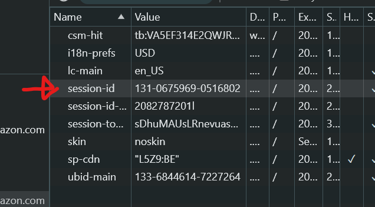

all de informatie word niet opgeslaan in de cookies, amazon gebruikt een session id om je te identificeren en houd zelf bij wat er in het winkenmandje zit
in de woorden van chatgpt:
Waar wordt de winkelwageninformatie opgeslagen? Als je geen directe informatie over je winkelwagen in local storage of cookies vindt, wordt de informatie waarschijnlijk opgeslagen op de server van Amazon. Dit gebeurt meestal met behulp van: Session Identifiers: Een sessie-ID wordt in een cookie geplaatst om je browser te identificeren. Deze ID kan aan Amazon laten weten welk winkelwagentje bij jou hoort, ook als je niet bent ingelogd. De inhoud van de winkelwagen zelf wordt dan op de Amazon-servers bewaard, niet in je browser.